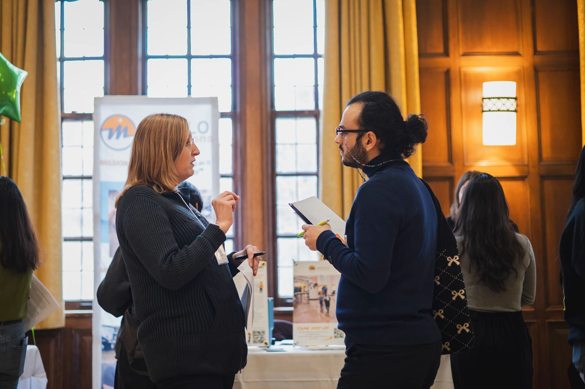
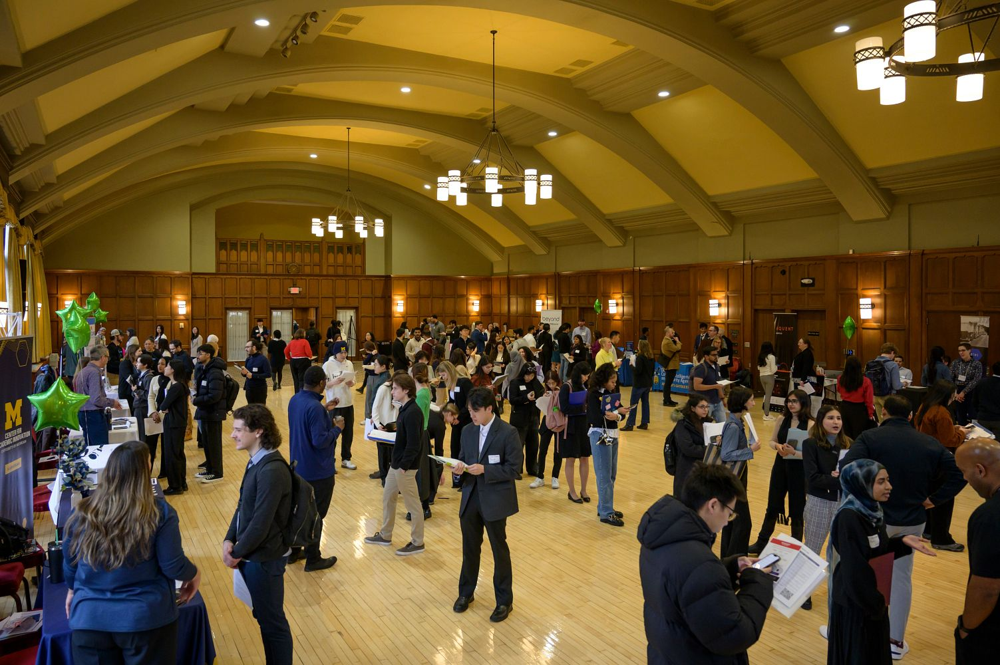
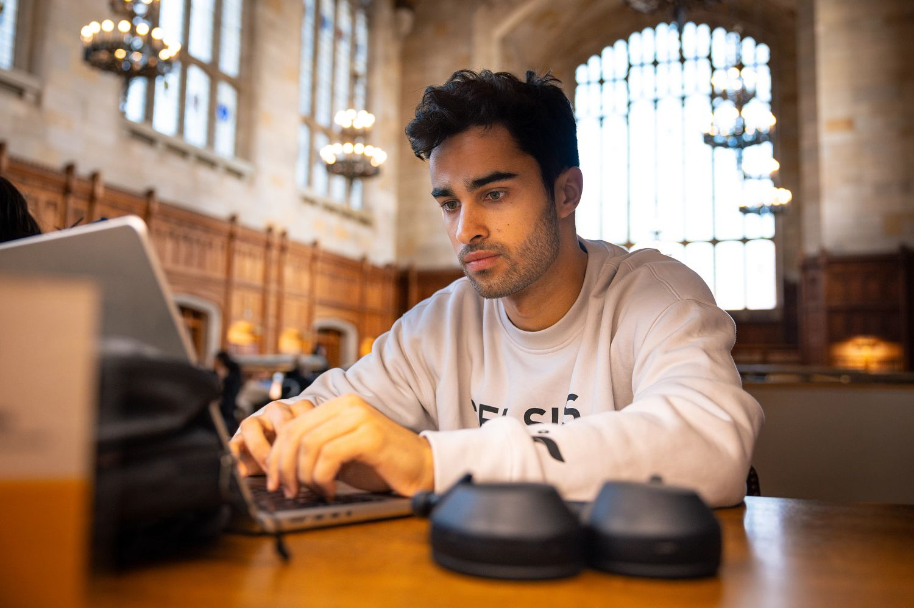

Common Interview Formats
Behavioral Interviews
Behavioral interviews are used across all interview rounds because past behavior is an indicator of future performance. You'll recognize behavioral questions when they ask for specific examples, often starting with "Tell me about a time when..." or "Give me an example of..."
The best way to answer behavioral questions is using the STAR method:
- Situation/Task: Describe the specific event or project
- Action: Explain what you did and why
- Result: Share the outcome and what you learned

Technical Interviews
Technical interviews assess your technical skills, problem-solving abilities, and critical thinking. Interviewers want to understand your thought process, not just see a "right" answer. Keep your answers concise (2-3 minutes), review the basics, and be prepared to walk through technical projects you've worked on. Always use "I" rather than "we" when discussing your specific contributions.
Case Interviews
Case interviews typically occur in 2nd or 3rd round interviews and involve solving a business problem presented by the interviewer. The key is demonstrating how you think on your feet by asking clarifying questions, having a clear problem-solving framework, remaining calm under pressure, and showing genuine interest in the challenge.
Design Interviews
For UX/UI roles, design interviews typically involve a 30-45 minute portfolio walkthrough. Be prepared to discuss the challenges you faced, your design process, how you worked with your team, the decisions you made, and the results you achieved. Focus on showing how you think and problem-solve, not just showing pretty screens.
How to Prepare for Success
Effective preparation makes all the difference. Start by researching the company thoroughly and reviewing the job description to match your qualifications to their needs. Know your product—yourself—by completing a self-assessment of your strengths, skills, and experiences.
Develop 5 strong stories that demonstrate different competencies like teamwork, problem-solving, leadership, and critical thinking. These stories should be specific examples from your work, academic, or project experience that you can adapt to various behavioral questions.

Practice is essential. Schedule mock interviews, record yourself answering common questions, or practice with friends and mentors. The more you practice articulating your experiences, the more natural and confident you'll sound during the actual interview.
Don't forget the practical details: confirm the interview location or video call link, test your technology in advance, prepare your attire, and bring copies of your resume.
Making a Strong Impression
During the interview, be alert, friendly, and courteous. Maintain good eye contact and project confidence while staying natural and authentic. Use specific examples to illustrate your skills—this is where your prepared stories come in handy.
Be honest about what you know and don't know. If you're asked about something unfamiliar, explain how you would approach learning it rather than trying to fake expertise.
Show enthusiasm for the role and company. Ask thoughtful questions that demonstrate you've done your research and are genuinely interested in the opportunity and team culture.
Succeeding in Virtual Interviews
Virtual interviews have become standard. Dress professionally (solid colors work best on camera), choose a quiet, private space with minimal background distractions, and ensure good lighting so interviewers can see you clearly.
Test your technology beforehand—check your camera, microphone, and internet connection. Have your interviewer's contact information ready in case of technical difficulties. Turn off notifications and silence your phone to avoid interruptions.

Body language still matters virtually. Sit up straight, smile, and look at the camera (not the screen) to create the impression of eye contact. Engage actively by nodding to show you're listening.
Following Up Professionally
Within 24 hours of your interview, send a thank-you note to each person who interviewed you. Keep it brief: express gratitude for their time, reiterate your interest in the role, and mention something specific from your conversation.
Take time to reflect on your performance. What went well? What could you improve? These insights will help you in future interviews.
If you haven't heard back within the timeline discussed, it's appropriate to follow up after about two weeks to express continued interest and ask about next steps.
Continue Your Interview Prep
- Practice with Big Interview for AI-powered feedback
- Review common interview questions for your field
- Schedule a mock interview with the UMSI Career Development Office
- Connect with alumni through the Alumni Career Connections Program
Remember: interviewing is a skill that improves with practice. The more you prepare and practice, the more confident and successful you'll be.